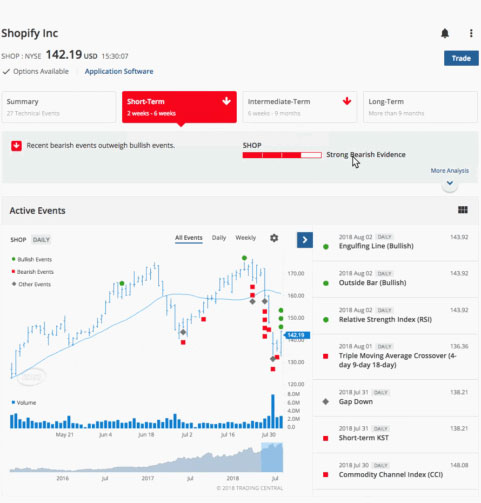

US net inflow of international capital in March (US $100 million)
June 27, 2018In Corporate, Expert, News, PR, ProductBy Tc Marketing
Technical Insight has been trusted by online brokers to help their investors find, validate and time their trades since 2003. Through the past 15 years, its rich analytics have set the global standard for actionable technical analysis and presently enable millions of investors to enjoy running their portfolio. Trading Central’s patented pattern recognition is paired with the industry’s largest collection of Technical Events from charting indicators, enabling Technical Insight to analyze virtually every publicly traded financial instrument including stocks, ETFs, indices, foreign exchange and futures.

Through a series of releases across the past year, Trading Central has made significant improvements to how investors interact with the rich analytics they already trust within Technical Insight. The redesign focused on arming online brokers to successfully respond to the rising demand for mobile solutions and engaging educational experiences. “A recent study by JD Power indicated that while research information is still not widely available on mobile, when it is, it has a high impact on customer satisfaction,” explained Kathryn St. John, Senior Director of User Experience at Trading Central. “That’s why it was important to us that Technical Insight makes it easy for investors to analyze their stocks on the go and to explore the opportunities spotted by our proprietary algorithms.”
Technical Insight’s new user interface, which can be seamlessly integrated into any responsive website or mobile application, brings the investor experience to the foreground. Its intuitive notification system makes it simple to learn about key price activity or to subscribe to new opportunities, even when when they’re on the go. Meanwhile, it makes it easier for the large cohort of new investors to benefit from analysis earlier and learn how to craft a trade, thanks to meaningful summaries of analysis, and explanations offered in natural language.
On May 24th, Technical Insight was awarded the “Best Specialist Product” at the Technical Analyst Awards in London. The award acts as an important beacon signalling the depth of Technical Insight’s coverage and how important the ease of use is for not only retail consumers, but expert analysts as well. Trading Central CEO Alain Pellier was present to accept the award on behalf of the company. “We’re proud to offer analytics that enable investors to enjoy running their own portfolios,” he said, “and we’re thrilled to be recognized within the industry for this initiative.”
Reading 100,000
100,000